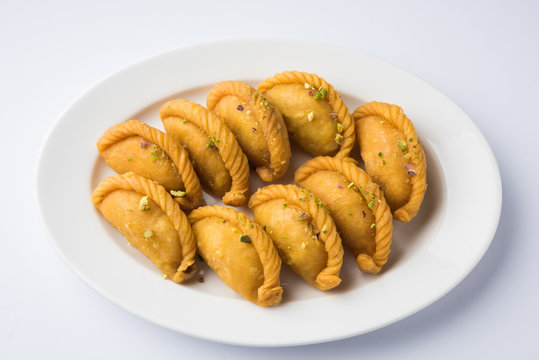

GUJIYA

Deep-Fried dumpling that is a popular dessert in the Indian.
Gujiya, also known as Gughara, Pedakiya, Karanji, Kajjikayalu, Somas, and Karjikyi.
Here's what you need
- Ghee - 50 gms + 2 tablespoon
- Maid + Aata - 200 gms
- Salt - 1 pinch
- Mawa - 150 gms
- Dessicted Jaggery or Boora or powdered
- Nuts - as per choice
- Powdered Jaggery or Boora or powdered sugar - 1/2-3/4 cup
- Oil for frying
- Optional - Sugar syrup
- Sugar/ Jaggery - 200 gms
- Kesar - Few strands
- Elaichi Power - teaspoon
Method
- Roast the mava till it changes color
- Roast the chopped nuts in some ghee
- Roast the dessicated coconut slightly
- Mix all the roasted ingredients togenther, add sugar
and elaichi powder when it has cooled down.
- Add ghee to the flour and mix thoroughly.
- Add a pinch of salt and then using water knead a stiff
dough. Do not overknead. keep aside for 30 mins.
- Roll small puris of the dough and fill them. Seal the
edges using some water
- Fry on a medium flame or Bake 200 degrees for 20 mins
- Use less sugar in the filling if you using sugar syrup.
- Add all ingediets with enough water to a sticky syrup. Dip the Gyjiy hot.